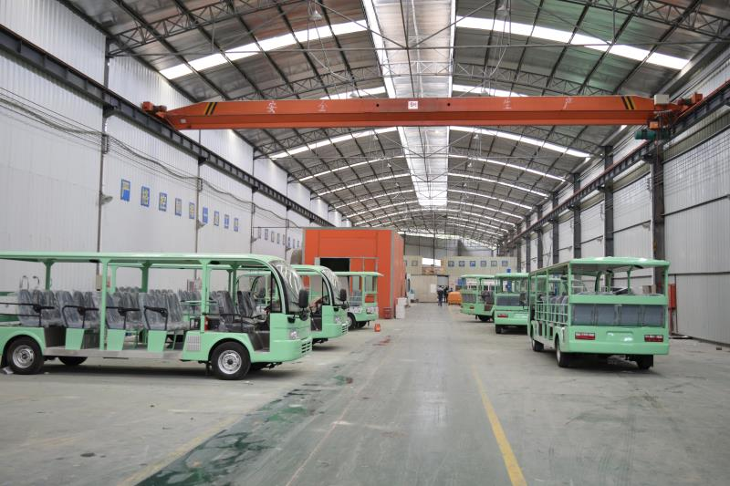

随着人们对旅游、休闲需求的增加，随着旅游业蓬勃的发展、景区开发与配套服务的不断投入，旅游景区对服务于游客的旅游观光车的需求也在不断增加。那么，作为景区观光车运营的投资者或管理，如何选择更好的旅游观光车，将是业内人事经常沟通的一个话题。选择好了，于游客更便捷、更舒心；于投资者或管理者使用更放心、投资回报率更高。以下从五个方面分析，选择旅游观光车产品的关键影响因素。
一、产品的安全性
1、选择品牌企业的生产资质
首先，选择产品品牌看是否获得国家技术监督局特种设备生产许可。目前在市场上存在一些小作坊，私自改装或套用一些品牌的资质，以极低的价格去争取机会。但往往这种情况存在很大的潜在风险，不出问题可能不觉得，一但出了安全事故，将没有任何保障，造成的损失将是巨大的。而具备生产资质的企业，对因产品问题出现的安全事故是负责任的。
2、选择产品的结构特点
一方面：目前市场上的观光车主要存在平头设计和前伸式凸头设计两种。平头设计使得第一排人员与车头的距离非常近，大大加大增加了第一排人员的危险系数。虽然是低速车辆，但对人造成的损伤是巨大的。以下图片血的教训，可以警示！
与之相反，前伸式凸头设计，加大了第一排人员与车头的距离，当发生碰撞时，在低速状态下，是有足够的安全距离进行缓冲，保障了司乘人员的生命安全。
因此选择产品尽量选择前伸式凸头设计的观光车产品。
另一方面：结构特点还体现在观光车乘坐人员离地高度。由于观光车敞开式设计，人员离地越高，危险性就越大。目前市场有一些观光车是使用微型车、轻型车底盘改装而成，乘坐人员离地面高度一般会在70CM或以上，而整体设计、制造的观光车，车辆地板离地高度一般在38CM左右，相比较而言，就大大提升了乘客的安全性。
选择低地板设计的观光车，安全系数会更高些。
3、产品制动的可靠性
主要表现在产品的制动方式，一般有四轮鼓刹、前盘后鼓，更好的有四轮盘刹，建议选择前盘后鼓及以上的制动模式。同时关键的一点，是否有双回路液压真空助力器，这个是制动及时性、有效性、舒适性的重要保障。真空助力器在道路用车的制动中是最普遍的。
4、速度的安全性要求
根据最新的GB/T 21268-2014 《非公路用旅游观光车通用技术条件》（已于2014年5月6日在中华人民共和国国家标准2014年第9号公告正式发布并要求立即实施），对旅游观光车产品的最高车速要求是在30KM/H以下（原标准为50KM/H）。现市面上有些观光车（包含内燃动力和电池动力）是没有对车速进行控制的，持续加速可达50KM/H以上，尤其是内燃动力的观光车，最高还可超过60KM/H。对于开放式的观光车，车速太快人，乘坐人员的安全系数大大降低。目前多数产品是通过控制油门的方式进行限速，也有部分做得比较好的是通过电脑整体控制，进行限速，更安全、可靠。
因此在选择产品时，需要非常关注产品的最高车速及是否具备限速装置，以控制车速。
二、产品的经济性
1、观光车动力方式选择响应运行效率和收益率
从观光车的营运角度分析，同样路况下，内燃机观光车相比电动观光车营运效率更高。由于电动车续驶里程有限，一般充一次电可80-100KM，而再次充电需要6-8小时，如营运需求量大，一辆电动车无法满足全天的营运需求，需要再增加一辆来补充，从而无形增加了整体营运成本。而内燃机观光车在燃油充足的情况下，可持续满足景区营运需求。
再者，遇到有坡度的运营线路，电动车的续驶里程会大大少于设计的续驶里程，视路况不同，有时甚至在40KM左右就耗完电无法使用，这样需要补充更多的电动观光车满足运营需求，增加了更多的投入成本。
同时，电动观光车使用的电池寿命是有限的，一般2年左右（视营运负荷程度而不同）需更换，而更换一次电池产生的成本也是一笔不小的费用。
2、电动车观光车电池选择影响使用成本
目前电动观光车的电池主要分为：维护型铅酸蓄电池和免维护型铅酸蓄电池。
由于维护型铅酸蓄电池的极板的栅架是用铅锑合金制造，在传统蓄电池使用过程中会发生减液现象。这是由于栅架上的锑会污染负极板上的铅，造成水的过度分解，大量氧气和氢气分别从正负极板上溢出，使电解液减少，因此需要定期维护和增加电解液。
免维护型蓄电池是用铅钙合金制造，由于蓄电池采用了铅钙合金做栅架，所以充电时产生的水分解量少，水分蒸发量也低，加上外壳采用密封结构，释放出来的硫酸气体也很少。所以它与传统蓄电池相比，具有不需添加任何液体，对接线桩头、电线和车身腐蚀少，抗过充电能力强，启动电流大，电量储存时间长等优点。
免维护电池相对维护电池，虽然初始成本需增加10%-20%，但由于在使用过程中维护成本低（无需增加电解液使用成本和人力加液时间成本）、充电过程相对安全、使用寿命相对长，在电池生命周期内，整体使用成本是要优于维护电池的。
3、产品品质好坏影响维护成本
首先，需要了解所选择产品企业的生产规模和硬件标准。具备良好的生产管理和质量管理、拥有较好的生产环境和生产设备，在很大程度上可以保证产品品质。而小作坊式的生产企业，在质量控制管理、生产规范性方面仍是会存在许多的不足，产品的品质势必也会受到影响。我们可以对所选择的品牌进行实地考察，参观产品生产现场，了解企业生产规模，以更好判断企业的势力及所选择产品的内在品质保障。
没有一个完美的产品，如果无法前往产品生产现场实地考察，但也要尽可能选择行业内口碑较好的品牌。这些品牌的优势主要表现在：产品质量稳定、大故障少、维护项目少、产品保养方便、产品维修响应快等。如果产品一出现问题就不能使用、服务响应速度慢、无法修理或是经常性出问题等，那对于整体营运产品会造成很大的影响。产品维护成本增加，经营效率和利润势必下降。
选择产品品牌最好是在业内多咨询、了解，特别是有些客户使用某品牌观光车有5年甚至10年以上的，那这种观光车一定有过人之处，这势必也能为你的选择提供参考。

三、产品的售后保障性
前面经济性主要是从产品的前期投入和使用方面考虑运营成本，而厂家后期所能提供的产品售后水平，就直接决定了你的维护成本，产品的售后保障性是你选择产品时更需关注的一面。主要需要关注以下几个方面：
1、是否有服务站为你提供产品保养、维修服务？
2、是否有专人员为你跟踪、协调产品问题解决？
3、解决问题的服务站是否有足够的能力和资源进行问题解决？
4、出现问题能否得到快速响应？
四、产品的舒适性
产品的舒适性主要包含驾驶员的舒适性和乘坐人员的舒适性。
由于驾驶员是长时间在车上，因此产品的操作简便性、性能流畅性直接影响驾驶员的舒适感，体现在产品上主要有：方向盘的轻重与是否有助力转向、档位操作的便利性、电机或发动机的提速性和动力性、产品制动的有效性（是否有真空助力）、车辆的减震效果（一般以独立悬挂减震效果为好）、驾驶区布局是否人性化（是否有水杯放置点、是否有车辆简易清洁工具放置点等）。
相对于驾驶员，观光车乘坐人员由于停留时间短、上下频繁等特点，他们更关注产品座椅是否宽敞、是否有安全防护设备、视线是否开阔、上下是否方便等。而产品的开放式、独立座椅、安全链（带）、全平低地板设计，正好可以满足此类需求。
五、产品的环保性
观光车的环保是相对的，不能说电动观光车就是绝对的环保，因为电动观光车后期报废的电池处理就涉及到环保的问题。如果处理不好，将给环境带很大的影响。同时也不能说内燃机观光车就不环保，目前主流的内燃机观光车采用的是达到欧4或国4排放标准的发动机，同时通过使用高标准的油品，废气排放也降低了很多，也同样具备一定环保性。如果条件允许，景区可以方便地加充天然气，也可将汽油内燃机观光车改装成使用天然气，这样排放会更环保。当然改装天然气需要前往有资质的改装机构进行改装。
观光车选购在关注产品的环保性时，应综合自身使用的道路情况、使用环境、计划营运线路情况进行综合对比。比如在坡度大、线路长的景区中，使用汽油观光车就会更加合适和经济。而用电动观光车，在满足营运需求的同时会增加车辆的投入和电池使用数量，从而带来后续的处理问题。而如果在空间相对小而密封的室内环境（如展馆内）使用电动观光车就会更适合和环保。
电动观光车的环保性需关注：电池的使用寿命、电池报废的处理办法等。
内燃机观光车的环保性需关注：发动机的排放标准、使用的油品标准和质量等。